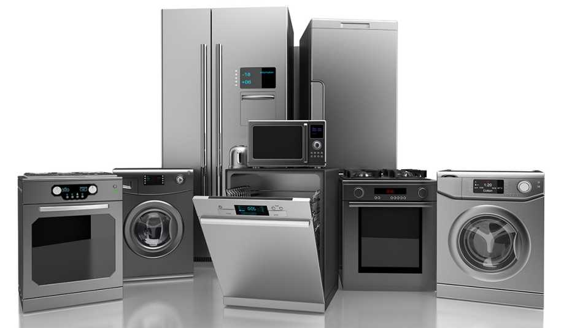

Tecnología eficiente, soluciones reales.
ZuinovaTech Solutions es una empresa ecuatoriana especializada en climatización, refrigeración, automatización del hogar y soporte técnico para electrodomésticos inteligentes. Contamos con más de 15 años de experiencia y un compromiso firme con la innovación y la excelencia técnica.
Hemos trabajado con más de 200 hogares y 50 empresas locales, implementando sistemas de refrigeración inteligente y soluciones de domótica personalizadas.
“Gracias a ZuinovaTech pude automatizar mi tienda. ¡El servicio fue impecable!” — Luis Carrera, propietario de Almacén Electrodos
“Mi refrigerador volvió a funcionar como nuevo. Muy profesionales.” — Rosa Mera, clienta residencial
Dirección: Av. 9 de Octubre y Eloy Alfaro, El Triunfo, Guayas, Ecuador
Teléfono: (04) 223-9815 / 099-112-5598
Correo: contacto@zuinovatech.ec